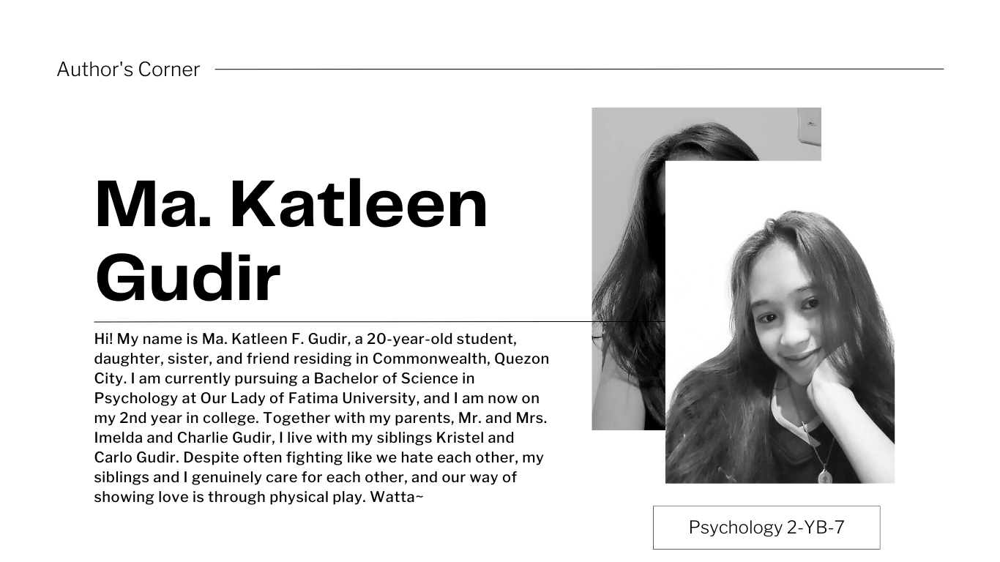

Here's an idea: let's talk about emotional self care! It's all about taking care of your feelings and making sure you're in a good place mentally. You can do things like journaling, talking to a friend, or taking a relaxing bath to help manage your emotions. Just remember, it's important to take care of yourself and prioritize your mental health. |
|
If you're looking for a way to bring some calm into your life, you'll have to make it happen yourself. It's easier than you think! Pick a time that's just for you, without distractions, and focus on your well-being. It could be in the morning, on the weekends, or after the kids go to bed. Use this time to practice self-soothing techniques and take care of yourself. By creating this routine, you'll find the peace you've been craving. Creating calm in your life means finding ways to feel peaceful and relaxed amidst the stress and chaos of everyday life. Find ways to feel calm in your life by setting aside time for self-care, such as taking a bath, meditating, or walking in nature. Identify what works for you and make it a priority to incorporate these activities into your routine to reduce stress and improve mental and emotional well-being. |
|
Do you feel overwhelmed with life's demands? Do you struggle to prioritize yourself amidst work and family responsibilities? It's easy to neglect self-care during stressful times, but it's crucial to prioritize your well-being. Practice self-care, even when busy, to maintain a healthy balance. Consider self-care as a safety briefing. Put your well-being first, just like putting on your own oxygen mask before assisting others. This principle is relevant in everyday life too, as you must be healthy to help others and enjoy life. Self Soothe is an effective technique to take care of yourself and boost your mood through your senses. |
|
The great outdoors has a unique way of grabbing our attention and drawing us in, unlike any other place we may find ourselves in. It not only provides a separation from the everyday stressors we face, but it also requires a different type of engagement than what we experience in our typical workspaces or bedrooms. When we stare into a campfire or a body of water, for example, we become completely immersed in the moment, with nature holding our focus. This effortless way of being mindful in nature makes it much simpler to achieve a state of mindfulness. Time to be outside! Notice your surroundings: listen for the wind rustling leaves, birds chirping, cars driving by, dogs barking, and sticks breaking. Can you identify these five sounds? Congratulations, you just practiced mindfulness! |
Even during busy times, prioritize self-care by regularly practicing self-soothe. Taking small moments to comfort and nurture yourself will help create calm, allowing you to better assist others. Make self-care a daily practice with the Self Soothe skill, no matter if you have an extra hour or five minutes. Taking care of yourself is important, as it allows you to then extend the same kindness to others who are caught up in their busy lives. |
|  |